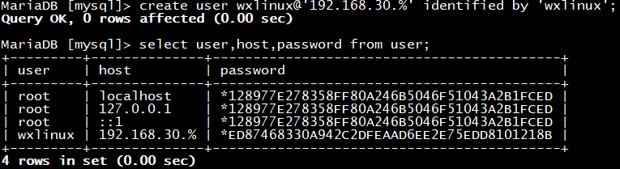

一、MySQL用户管理
用户账号：
MySQL的用户账号由两部分组成：用户名+主机名
‘USERNAME’@’HOST’
其中：
主机名HOST可以是IP地址或Network；
主机名HOST也支持通配符的写法：
如：wxlinux@172.20.%.%
MySQL中自带有一张名称为mysql的数据库，称为元数据数据库。
它是mysql的核心数据库，类似于sql server中的master库，主要负责存储数据库的
用户、权限设置、关键字等mysql自己需要使用的控制和管理信息。
系统授权表：
user表：该表决定是否允许用户连接到服务器。如果允许连接，权限字段则
为该用户的全局权限。
db表：用于决定哪些用户可以从哪些主机访问哪些数据库。包含在db表中的
权限适用于这个表标识的数据库。
host表：当您想在db表的范围之内扩展一个条目时，就会用到这个表。举例
来说，如果某个db允许通过多个主机访问的话，那么超级用户就可
以让db表内将host列为空，然后用必要的主机名填充host表。
tables_priv表：该表与db表相似，不同之处是它用于表而不是数据库。这个
表还包含一个其他字段类型，包括timestamp和grantor两个字段，用
于存储时间戳和授权方。在本文后面我们会对这个表做进一步的讲解。
columns_priv：该表作用几乎与db和tables_priv表一样，不同之处是它提供
的是针对某些表的特定列的权限。这个表也多 出了一个字段类型，即
其他字段，包括了一个timestamp列，用于存放时间戳。
用户管理
创建用户：
方法一：
CREATE USER ‘USERNAME’@’HOST’ [IDENTIFIED BY ‘password’]；
默认权限：USAGE，只能连接数据库，无法查看、更改、删除
示例：
Mysql> create user wxlinux@’192.168.30.%’ identified by ‘wxlinux’;
Mysql> select user,host,password from mysql.user where user=’wxlinux’;

方法二：
也可使用GRANT 授权同时创建用户
示例：
授权wang用户select、insert权限同时创建用户
Mysql> grant select,insert on hellodb.* to wang@’%’ identified by ‘centos’;
Mysql> select user,host,password from mysql.user where user=’wang’;
用户重命名：
RENAME USER old_user_name TO new_user_name
示例：
Mysql> rename user wxlinux@’192.168.30.%’ to wangx@’192.168.30.%’;
Mysql> select user,host,password from user where user=’wangx’;
删除用户：
DROP USER ‘USERNAME’@’HOST’
示例：
删除匿名用户：
MariaDB [mysql]> select user,host,password from user;
删除指定用户：
Mysql> drop user wangx@’192.168.30.%’;
Mysql> select user,host,password from user where user=’wangx’;
Empty set (0.00 sec)
修改密码：
方法一：
Mysql> SET PASSWORD FOR ‘user’@’host’ = PASSWORD(‘password’);
方法二：
Mysql> UPDATE mysql.user SET password=PASSWORD(‘password’) WHERE clause;
此方法需要执行下面指令才能生效：
Mysql> FLUSH PRIVILEGES;
方法三：
bash命令行修改
无密码新设密码：
# mysqladmin -u root password ‘newpasswd’
修改旧密码：
#mysqladmin -u root –poldpasswd password ‘newpasswd’
二、MySQL权限管理
权限类别：
数据库级别
表级别
字段级别
管理类
程序类
管理类：
CREATE TEMPORARY TABLES
CREATE USER
FILE
SUPER
SHOW DATABASES
RELOAD
SHUTDOWN
REPLICATION SLAVE
REPLICATION CLIENT
LOCK TABLES
PROCESS
程序类： FUNCTION、PROCEDURE、TRIGGER
CREATE
ALTER
DROP
EXCUTE
库和表级别：DATABASE、TABLE
ALTER
CREATE
CREATE VIEW
DROP
INDEX
SHOW VIEW
GRANT OPTION：能将自己获得的权限转赠给其他用户
数据操作：
SELECT
INSERT
DELETE
UPDATE
字段级别：
SELECT(col1,col2,…)
UPDATE(col1,col2,…)
INSERT(col1,col2,…)
所有权限：ALL PRIVILEGES 或 ALL
授权：
参考：https://dev.mysql.com/doc/refman/5.7/en/grant.html
GRANT priv_type [(column_list)],… ON [object_type] priv_level TO ‘user’@’host’
[IDENTIFIED BY ‘password’] [WITH GRANT OPTION];
priv_type：ALL [PRIVILEGES]
object_type：TABLE | FUNCTION | PROCEDURE
priv_level：*(所有库) | . | db_name.* | db_name.tbl_name | tbl_name(当前库
的表) | db_name.routine_name(指定库的函数,存储过程,触发器)
with_option：GRANT OPTION
| MAX_QUERIES_PER_HOUR count
| MAX_UPDATES_PER_HOUR count
| MAX_CONNECTIONS_PER_HOUR count
| MAX_USER_CONNECTIONS count
回收授权：
REVOKE priv_type [(column_list)] [, priv_type[(column_list)]] …
ON [object_type] priv_level FROM user [, user] …
查看指定用户获得的授权：
Help SHOW GRANTS
SHOW GRANTS FOR ‘user’@’host’;
SHOW GRANTS FOR CURRENT_USER[()];
注意：MariaDB服务进程启动时会读取mysql库中所有授权表至内存
(1) GRANT或REVOKE等执行权限操作会保存于系统表中，MariaDB的服务进
程通常会自动重读授权表，使之生效
(2) 对于不能够或不能及时重读授权表的命令，可手动让MariaDB的服务进程
重读授权表：mysql> FLUSH PRIVILEGES;
示例：
授权同时创建用户
MariaDB [hellodb]> grant select,insert on hellodb.* to mage@’%’ identified by ‘centos’;
MariaDB [hellodb]> select user,host,password from mysql.user;

只授权某个字段的操作权限
MariaDB [hellodb]> grant select(stuid,name) on hellodb.students to zhang@’%’identified by ‘centos’;
查看指定用户的权限
MariaDB [hellodb]> show grants for wang@’192.168.30.%’;
查看本机登录用户权限
current_user()是一个变量，特指本机
MariaDB [(none)]> show grants for current_user();
收回指定用户的select权限
MariaDB [hellodb]> revoke select on hellodb.* from mage@’%’;
三、并发控制
锁粒度：
表级锁
行级锁
锁：
读锁：共享锁，只读不可写，多个读互不阻塞，
写锁：独占锁,排它锁，一个写锁会阻塞其它读和它锁
实现
存储引擎：自行实现其锁策略和锁粒度
服务器级：实现了锁，表级锁；用户可显式请求
分类：
隐式锁：由存储引擎自动施加锁
显式锁：用户手动请求
锁策略：在锁粒度及数据安全性寻求的平衡机制
显示使用锁
LOCK TABLES
tbl_name [[AS] alias] lock_type
[, tbl_name [[AS] alias] lock_type] …
lock_type: READ ， WRITE
解锁
UNLOCK TABLES
FLUSH TABLES tb_name[,…] [WITH READ LOCK]
关闭正在打开的表（清除查询缓存），通常在备份前加全局读锁
SELECT clause [FOR UPDATE | LOCK IN SHARE MODE]
查询时加写或读锁
添加读锁：
效果：可查看但不可修改，本端会提示，其他客户端会卡住并且无提示
MariaDB [hellodb]> lock tables teachers read;
添加写锁：
效果：自己可读，但别人无法读
MariaDB [hellodb]> lock tables students write;
四、操作：破解Mysql数据库口令
方法一：
适合干净环境，没有其他数据库：
systemctl stop mariadb
cd /var/lib/mysql/
rm -rf mysql/*
systemctl start mariadb
方法二：
vim /etc/my.cnf.d
[mysqld]
skip-grant-tables #忽略授权表
重启mysql服务
systemctl restart mariadb
#mysql
MariaDB [mysql] > use mysql
MariaDB [mysql] > update user set password=(‘centos’)where user=’root’ and host=’localhost’
最后再将忽略授权表那行删掉
重启mysql服务
systemctl restart mariadb